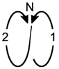

| |
Arm Direction
|
Hand Position
|
Direction
|
Method
|
Lead
|
| 1. |
Downward R-to-L |
Forehand |
|
Strike only |
Begin in R/lead |
|
| 2. |
Downward L-to-R |
Backhand |
|
Strike-n'switch |
To L/lead |
|
| 3. |
Horizontal R-to-L |
Forehand |
|
Switch-n'strike |
To R/lead |
|
| 4. |
Horizontal L-to-R |
Backhand |
|
Strike-n'switch |
To L/lead |
|
| 5. |
Upward Forward |
Thrust |
|
Switch-n'thrust |
(R/steps forward)
To R/lead |
|
| 6. |
Down R/side
& Forward |
Thrust |
|
Switch-n'thrust |
(R/steps back)
To L/lead |
|
| 7 & 8. |
High horiz. Abanico
Right & Left (7 & 8) |
Backhand &
Forehand |
Strike NE,
then NW |
Switch-n'abanico |
To R/lead |
|
| 9. |
Downward R-to-L |
Forehand |
NE-to-SW |
Strike only |
Remain in R/lead |
|
| 10. |
L-to-R, Down R/side |
Backhand |
NW-to-SE |
Strike-n'switch . . . |
To L/lead |
|
| 11. |
Roller Coaster: Looping
Up Forward-n'over R/side
to Down L/side, then
Up Forward-n'over L/side |
Thrust 
Thrust  |
 |
Thrust
(like Count 6),
then Switch- . . .
n'Thrust again |
To R/lead |
|
| 12. |
360° vertical loop
(covering L/side of
upper body only) |
Backhand |
N-to-S-n'back
to face-height |
Strike down
12 O'clock-line
in front |
Remain in R/lead |